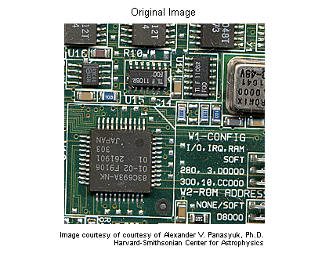
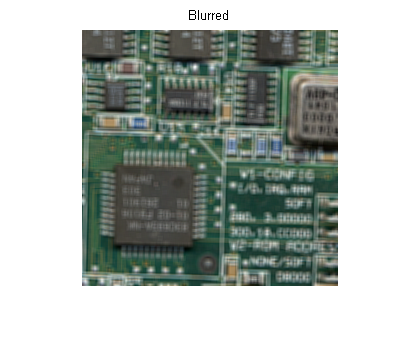
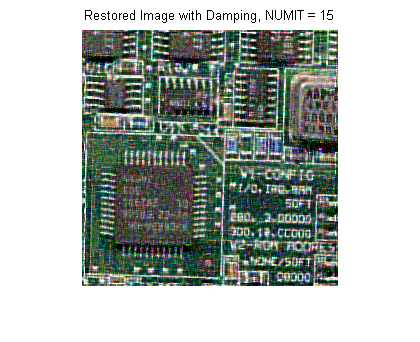
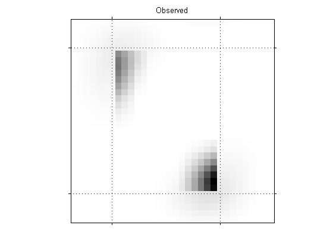
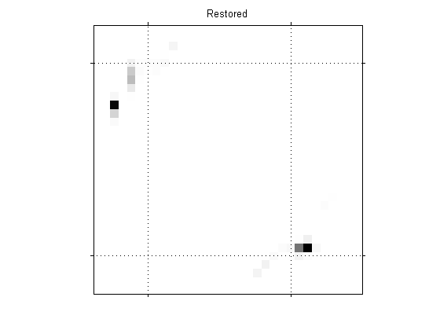
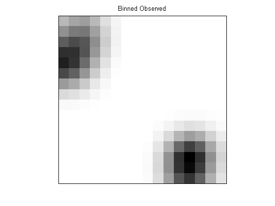
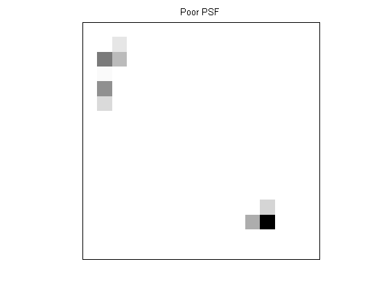
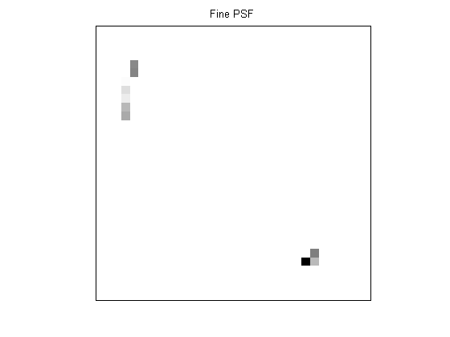

Deblurring Images Using the Lucy-Richardson Algorithm
The Lucy-Richardson algorithm can be used effectively when the point-spread function PSF (blurring operator) is known, but little or no information is available for the noise. The blurred and noisy image is restored by the iterative, accelerated, damped Lucy-Richardson algorithm. The additional optical system (e.g. camera) characteristics can be used as input parameters to improve the quality of the image restoration.
Contents
Step 1: Read Image
The example reads in an RGB image and crops it to be 256-by-256-by-3. The deconvlucy function can handle arrays of any dimension.
I = imread('board.tif'); I = I(50+[1:256],2+[1:256],:); figure;imshow(I);title('Original Image'); text(size(I,2),size(I,1)+15, ... 'Image courtesy of courtesy of Alexander V. Panasyuk, Ph.D.', ... 'FontSize',7,'HorizontalAlignment','right'); text(size(I,2),size(I,1)+25, ... 'Harvard-Smithsonian Center for Astrophysics', ... 'FontSize',7,'HorizontalAlignment','right');
Step 2: Simulate a Blur and Noise
Simulate a real-life image that could be blurred (e.g., due to camera motion or lack of focus) and noisy (e.g., due to random disturbances). The example simulates the blur by convolving a Gaussian filter with the true image (using imfilter). The Gaussian filter then represents a point-spread function, PSF.
PSF = fspecial('gaussian',5,5); Blurred = imfilter(I,PSF,'symmetric','conv'); figure;imshow(Blurred);title('Blurred');
The example simulates the noise by adding a Gaussian noise of variance V to the blurred image (using imnoise). The noise variance V is used later to define a damping parameter of the algorithm.
V = .002; BlurredNoisy = imnoise(Blurred,'gaussian',0,V); figure;imshow(BlurredNoisy);title('Blurred & Noisy');
Step 3: Restore the Blurred and Noisy Image
Restore the blurred and noisy image providing the PSF and using only 5 iterations (default is 10). The output is an array of the same type as the input image.
luc1 = deconvlucy(BlurredNoisy,PSF,5);
figure;imshow(luc1);title('Restored Image, NUMIT = 5');
Step 4: Iterate to Explore the Restoration
The resulting image changes with each iteration. To investigate the evolution of the image restoration, you can do the deconvolution in steps: do a set of iterations, see the result, and then resume the iterations from where they were stopped. To do so, the input image has to be passed as a part of a cell array (e.g., start first set of iterations by passing in {BlurredNoisy} instead of BlurredNoisy as input image parameter).
luc1_cell = deconvlucy({BlurredNoisy},PSF,5);
In that case the output, luc1_cell, becomes a cell array. The cell output consists of four numeric arrays, where the first is the BlurredNoisy image, the second is the restored image of class double, the third array is the result of the one-before-last iteration, and the fourth array is an internal parameter of the iterated set. The second numeric array of the output cell-array, image luc1_cell{2}, is identical to the output array of the Step 3, image luc1, with a possible exception of their class (the cell output always gives the restored image of class double).
To resume the iterations, take the output from the previous function call, the cell-array luc1_cell, and pass it into the deconvlucy function. Use the default number of iterations (NUMIT = 10). The restored image is the result of a total of 15 iterations.
luc2_cell = deconvlucy(luc1_cell,PSF);
luc2 = im2uint8(luc2_cell{2});
figure;imshow(luc2);title('Restored Image, NUMIT = 15');
Step 5: Control Noise Amplification by Damping
The latest image, luc2, is the result of 15 iterations. Although it is sharper than the earlier result from 5 iterations, the image develops a "speckled" appearance. The speckles do not correspond to any real structures (compare it to the true image), but instead are the result of fitting the noise in the data too closely.
To control the noise amplification, use the damping option by specifying the DAMPAR parameter. DAMPAR has to be of the same class as the input image. The algorithm dampens changes in the model in regions where the differences are small compared with the noise. The DAMPAR used here equals 3 standard deviations of the noise. Notice that the image is smoother.
DAMPAR = im2uint8(3*sqrt(V));
luc3 = deconvlucy(BlurredNoisy,PSF,15,DAMPAR);
figure;imshow(luc3);
title('Restored Image with Damping, NUMIT = 15');
 The next part of this demo explores the WEIGHT and SUBSMPL input parameters of the deconvlucy function, using a simulated star image (for simplicity & speed).
Step 6: Create Sample Image
The example creates a black/white image of four stars.
I = zeros(32);I(5,5)=1;I(10,3)=1;I(27,26)=1;I(29,25)=1; figure;imshow(1-I,[],'InitialMagnification','fit'); set(gca,'Visible','on','XTickLabel',[],'YTickLabel',[],... 'XTick',[7 24],'XGrid','on','YTick',[5 28],'YGrid','on'); title('Data');

Step 7: Simulate a Blur
The example simulates a blur of the image of the stars by creating a Gaussian filter, PSF, and convolving it with the true image.
PSF = fspecial('gaussian',15,3); Blurred = imfilter(I,PSF,'conv','sym');
Now simulate a camera that can only observe part of the stars' images (only the blur is seen). Create a weighting function array, WEIGHT, that consists of ones in the central part of the Blurred image ("good" pixels, located within the dashed lines) and zeros at the edges ("bad" pixels - those that do not receive the signal).
WT = zeros(32);WT(6:27,8:23) = 1; CutImage = Blurred.*WT;
To reduce the ringing associated with borders, apply the edgetaper function with the given PSF.
CutEdged = edgetaper(CutImage,PSF); figure;imshow(1-CutEdged,[],'InitialMagnification','fit'); set(gca,'Visible','on','XTickLabel',[],'YTickLabel',[],... 'XTick',[7 24],'XGrid','on','YTick',[5 28],'YGrid','on'); title('Observed');
Step 8: Provide the WEIGHT Array
The algorithm weights each pixel value according to the WEIGHT array while restoring the image. In our example, only the values of the central pixels are used (where WEIGHT = 1), while the "bad" pixel values are excluded from the optimization. However, the algorithm can place the signal power into the location of these "bad" pixels, beyond the edge of the camera's view. Notice the accuracy of the resolved star positions.
luc4 = deconvlucy(CutEdged,PSF,300,0,WT); figure;imshow(1-luc4,[],'InitialMagnification','fit'); set(gca,'Visible','on','XTickLabel',[],'YTickLabel',[],... 'XTick',[7 24],'XGrid','on','YTick',[5 28],'YGrid','on'); title('Restored');
Step 9: Provide a finer-sampled PSF
deconvlucy can restore undersampled image given a finer sampled PSF (finer by SUBSMPL times). To simulate the poorly resolved image and PSF, the example bins the Blurred image and the original PSF, two pixels in one, in each dimension.
Binned = squeeze(sum(reshape(Blurred,[2 16 2 16]))); BinnedImage = squeeze(sum(Binned,2)); Binned = squeeze(sum(reshape(PSF(1:14,1:14),[2 7 2 7]))); BinnedPSF = squeeze(sum(Binned,2)); figure;imshow(1-BinnedImage,[],'InitialMagnification','fit'); set(gca,'Visible','on','XTick',[],'YTick',[]); title('Binned Observed');
Restore the undersampled image, BinnedImage, using the undersampled PSF, BinnedPSF. Notice that the luc5 image distinguishes only 3 stars.
luc5 = deconvlucy(BinnedImage,BinnedPSF,100); figure;imshow(1-luc5,[],'InitialMagnification','fit'); set(gca,'Visible','on','XTick',[],'YTick',[]); title('Poor PSF');
The next example restores the undersampled image (BinnedImage), this time using the finer PSF (defined on a SUBSMPL-times finer grid). The reconstructed image (luc6) resolves the position of the stars more accurately. Note how it distributes power between the two stars in the lower right corner of the image. This hints at the existence of two bright objects, instead of one, as in the previous restoration.
luc6 = deconvlucy(BinnedImage,PSF,100,[],[],[],2); figure;imshow(1-luc6,[],'InitialMagnification','fit'); set(gca,'Visible','on','XTick',[],'YTick',[]); title('Fine PSF');